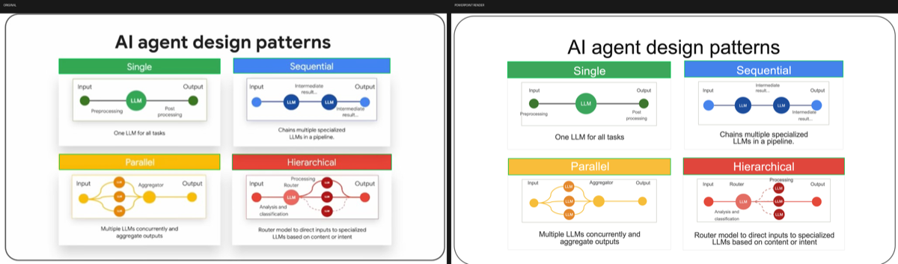

Screenshot → Editable PowerPoint
Rebuild a slide screenshot as native editable .pptx —
real shapes, real text, grouped icons. Not a pasted picture.
Delivery is blocked until three automated gates pass.

Original screenshot (left) vs PowerPoint slideshow raster of the rebuilt editable deck (right).
1. Source audit
Spec text boxes must sit on real ink in the original photo. Glyph height must match declared pt.
2. Structure verify
Shape, font, and sampled colors checked against the screenshot and the built PPTX.
3. Visual compare
Real PowerPoint slideshow raster vs original — card IoU and layout, not Quick Look.